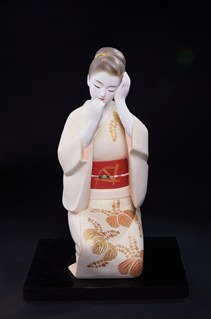

Mijitaku (Sẵn sàng / Chuẩn bị trang phục) có nghĩa là "chuẩn bị trang phục", "chỉnh trang trước khi ra ngoài". Đây là một tác phẩm thuộc dòng Hakata Ningyō (博多人形) – dòng búp bê đất sét truyền thống nổi tiếng của thành phố Hakata, tỉnh Fukuoka, được biết đến với vẻ đẹp thanh thoát, biểu cảm tinh tế và kỹ thuật tạo hình điêu luyện.
Tác phẩm khắc họa hình ảnh một người phụ nữ Nhật Bản đang nhẹ nhàng chỉnh lại mái tóc và trang phục trước khi bước ra ngoài. Cử chỉ khẽ nghiêng đầu, đôi tay mềm mại cùng ánh mắt trầm lắng tạo nên cảm giác yên bình và duyên dáng. Bộ kimono màu trắng với những họa tiết truyền thống được tô vẽ thủ công càng làm nổi bật vẻ đẹp thanh khiết và trang nhã của nhân vật.
Khác với các búp bê tái hiện nhân vật sân khấu hay lễ hội, Mijitaku ghi lại một khoảnh khắc rất đời thường nhưng giàu cảm xúc. Tác phẩm thể hiện quan niệm thẩm mỹ của người Nhật rằng vẻ đẹp không chỉ nằm ở những dịp trọng đại mà còn hiện hữu trong những hành động nhỏ bé, được thực hiện với sự cẩn trọng và tinh tế.
Là một tác phẩm Hakata Ningyō, búp bê còn phản ánh trình độ chế tác thủ công đặc sắc của các nghệ nhân Fukuoka. Từng đường nét trên khuôn mặt, nếp gấp của kimono và màu sắc đều được hoàn thiện bằng tay, tạo nên vẻ đẹp mềm mại và sống động. Ngày nay, Hakata Ningyō không chỉ là biểu tượng của nghệ thuật truyền thống Nhật Bản mà còn là món quà mang ý nghĩa cầu chúc hạnh phúc, may mắn và cuộc sống viên mãn.
身支度とは、「出かける前に服装や身なりを整えること」を意味します。本作は、福岡県博多で生まれた有名な伝統の土人形「博多人形」の作品です。博多人形は、優美な姿、繊細な表情、卓越した造形技術で知られています。
本作は、出かける前に髪や着物をそっと整える日本女性の姿を表しています。わずかに首をかしげたしぐさ、柔らかな手、落ち着いたまなざしが、穏やかで優美な雰囲気を生み出しています。手彩色された伝統文様の白い着物が、人物の清らかで上品な美しさをいっそう引き立てています。
舞台の登場人物や行事を再現した人形とは異なり、身支度はごく日常的でありながら情感豊かな一瞬をとらえています。美しさは特別な場面だけでなく、心を込めて丁寧に行う小さな動作の中にもある、という日本人の美意識を表現した作品です。
博多人形として、本作は福岡の職人ならではの優れた手仕事も映し出しています。顔の線、着物のひだ、色彩の一つひとつが手作業で仕上げられ、柔らかく生き生きとした美しさを生んでいます。今日、博多人形は日本の伝統美術の象徴であるだけでなく、幸福や幸運、満ち足りた暮らしを願う贈り物としても親しまれています。